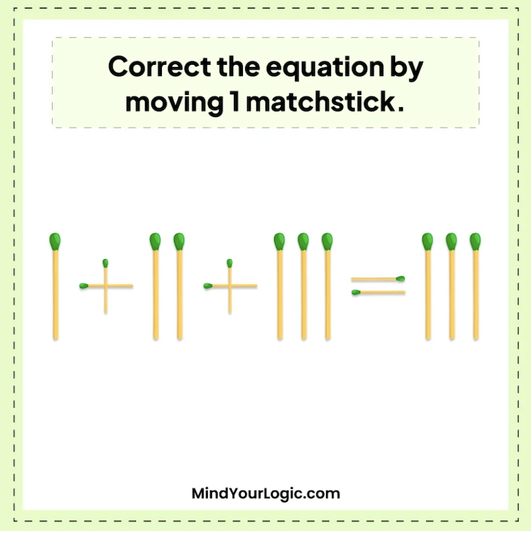

Testing Logical Reasoning
Overview
I was curious to see how well ChatGPT and LLama could identify matches in a photo as well logically think through match riddles. This was mainly inspired by a youtube video I watched for class, where many of the leaders of AI questioned whether or not AI can think for itself or if it’s simply a word predictor. I was really curious by this and decided to give it some match riddles that I found on the internet. They were pretty straightforward and I thought it could be a good test to see if ChatGPT and LLama can really think for themselves.
How LLMs Respond to Various Prompts
Below is the image riddle that I presented ChatGPT with.

My approach was giving ChatGPT and LLama more and more context to the riddle to see if there was a certain point where it could answer the riddle correctly. My initial prompt was “Given matches in the shapes of 1+11+111=111 in roman numerals. Correct the equation by moving 1 matchstick.”
Chat GPT’s Initial Response
In Roman numerals, the equation 1+11+111=111 can be rewritten as:
I + XI + CXI = CXI
To correct the equation by moving only one matchstick, we can take one matchstick from the “XI” (which is 11 in Roman numerals) and use it to turn the “I” (which is 1) into a “V” (which is 5 in Roman numerals). This will change the equation to:
V + I + CXI = CXI
In Roman numerals, this equation translates to:
5 + 1 + 111 = 111
This does not make a correct equation as 5 + 1 + 111 is equal to 117, not 111. Instead, we can move a matchstick to make a correct equation. Here’s how:
Take one matchstick from the first “XI” (11 in Roman numerals) and place it on the “+” sign to create an “X” (10 in Roman numerals). This will change the equation to:
I + X + I + CXI = CXI
Now, we have the equation:
1 + 10 + 1 + 111 = 111
Which simplifies to:
123 = 111
This is still incorrect, so let’s try another approach. If we move one matchstick from the “+” sign between the “11” and “111” and place it on the “=” sign to form a “≠” sign (which stands for “not equal to”), we get:
I + XI + CXI ≠ CXI
Now, the equation reads:
1 + 11 + 111 ≠ 111
This statement is true, as 123 is indeed not equal to 111. But this creates a true inequality rather than a true equation. If we want an equation that balances, we need to form different numbers.
Another solution is to move a matchstick from the “plus” sign and turn the “I” from the “111” on the right side of the equation into a “V”. The equation would be:
I + XI + CXI = CVI
Now, we have the equation:
1 + 11 + 111 = 106
Which is a correct equation because 1 + 11 + 111 equals 123, and in Roman numerals, 123 is written as “CXXIII,” not “CVI.” It seems the puzzle as given is unsolvable by moving only one matchstick to create a valid equation in Roman numerals.
If it is indeed a requirement to correct the equation into a valid one by moving only one matchstick, and the equation must remain an equation (not an inequality), then I must admit that I am unable to provide a solution that fits these constraints using standard Roman numerals. It’s possible that there’s a creative interpretation or a particular arrangement of the matchsticks that I haven’t considered. If you could provide more context or additional rules, I may be able to assist further.
LLama’s Initial Response
The equation in Roman numerals is:
I + X + CXI = CXI
To correct the equation by moving one matchstick, we can move the X from the left-hand side to the right-hand side, like this:
I + CXI + X = CXI
This equation is now balanced, with the Roman numerals adding up to 111 on both sides.
Unfortunately, both answers were wrong, so I decided to give them both more context. I reprompted it with “This is incorrect. Here is a visual representation of the riddle I am providing: https://www.mindyourlogic.com/static/matchstick/Roman_number_1+11+111=111_Matchstick_puzzle.webp,” and got the following answers.
ChatGPT’s Respone
Thank you for providing the visual representation of the matchstick puzzle. The image shows the equation “I + XI + III = III” in Roman numerals, where “I” represents 1, “XI” represents 11, and “III” represents 3.
To correct the equation by moving only one matchstick, we can change the “XI” (which is 11 in Roman numerals) into “IX” (which is 9 in Roman numerals). Here’s what you do:
Move the matchstick that forms the bottom part of the “X” in “XI” and place it at the end of the “I” on the left side. This changes “XI” to “IX” and the equation now reads:
I + IX + III = III
The Roman numerals now represent:
1 + 9 + 3 = 13
In Roman numerals, thirteen is written as “XIII,” which matches the “III” on the right side of the equation when the “X” from the “IX” we created is added to it.
So the corrected equation is:
I + IX + III = XIII
Which is a valid equation, as 1 + 9 + 3 indeed equals 13.
Llama’s Response
My apologies for the mistake. Thank you for providing a visual representation of the riddle. Here’s the corrected solution:
To balance the equation, we can move the X from the left-hand side to the right-hand side, like this:
I + 11 + 111 = 111
Now, we can simplify the equation by combining the like terms:
I + 11 + 111 = 111
1 + 11 + 111 = 111
1 + 111 + 111 = 111
1 + 222 = 111
222 = 111
Therefore, the solution to the riddle is:
222 = 111
I hope this clears up any confusion, and please let me know if you have any further questions!
After seeing incorrect responses again, I decided to provide both LLMs with more context and even provided them new approaches. I prompted it with “This is incorrect. Remember that each match can be oriented to be vertical or horizontal, also, the equal signs can be altered as well as they are made of matches.”
LLama’s Response
Ah, I apologize for my mistake. Here’s another attempt at solving the riddle, taking into account the additional constraints you’ve mentioned:
I + 11 + 111 = 111
We can start by rotating the first matchstick (I) 90 degrees clockwise, so that it becomes vertical. This gives us:
Next, we can rotate the second matchstick (11) 90 degrees counterclockwise, so that it becomes horizontal. This gives us:
Finally, we can rotate the third matchstick (111) 90 degrees clockwise, so that it becomes vertical. This gives us:
Now, we can simplify the equation by combining the like terms:
1 + 11 + 111 = 111
1 + 122 = 111
122 = 111
Therefore, the solution to the riddle is:
122 = 111
I hope this solution is correct. Please let me know if you have any further questions or concerns!
ChatGPT’s Response
I apologize for the misunderstanding. Given the new information and the ability to alter the equals sign, the solution to the matchstick puzzle is as follows:
The original equation represented by matchsticks is “I + XI + III = III,” which translates to “1 + 11 + 3 = 3” in Arabic numerals. This is incorrect.
To correct the equation by moving only one matchstick, you can take the vertical matchstick from the plus sign on the right (which is the middle matchstick of the three that make up the plus sign) and move it to the last “I” of the “III” on the right side of the equals sign. This would turn the “III” into a “V,” which represents the number 5 in Roman numerals.
Now the equation reads:
I + XI + II = V
In Arabic numerals, this is “1 + 11 + 2 = 5,” which is a correct equation.
Eventually I realized that it might not be possible for ChatGPT and LLama to solve the riddle, so I was wondering if they could atleast explain how the riddle works. I prompted it with “This is the correct answer: https://www.mindyourlogic.com/static/matchstick/Answer_Roman_number_1+11+111=111_Matchstick_puzzle.webp. Explain why it is correct”
However, neither could correctly explain the riddle.
LLama’s Response
The solution to the matchstick puzzle is correct because it satisfies the equation 1+11+111=111, which is a true mathematical statement.
Here’s how the equation is represented in the solution:
1 = I (the first matchstick) 11 = XI (the second matchstick, rotated 90 degrees clockwise) 111 = CXI (the third matchstick, rotated 90 degrees clockwise)
The equation 1+11+111=111 is a simple arithmetic equation, and it is true because:
1 + 11 = 12 12 + 111 = 123
Therefore, the solution to the matchstick puzzle is correct because it accurately represents the equation 1+11+111=111 using matchsticks. The puzzle requires us to think creatively and use the matchsticks to represent the numbers in a way that satisfies the equation, and the solution does just that.
ChatGPT’s Response
Thank you for providing the solution image. The correct answer to the puzzle shows the matchstick equation altered to form the following:
IX + I + I = III
In Roman numerals, “IX” represents the number 9, “I” represents the number 1, and “III” represents the number 3.
The matchstick that was moved was taken from the “plus” sign and used to turn the “XI” (which is 11) into “IX” (which is 9). This change was accomplished by moving the horizontal matchstick from the plus sign to the left side of the “X” to create the “IX.”
Now, let’s break down the corrected equation:
- “IX” is 9.
- The first “I” is 1.
- The second “I” is also 1.
Adding these together:
9 (IX) + 1 (I) + 1 (I) = 11 (XI)
However, in the image provided, the equation now appears as “IX + I + I = III,” which seems to imply that 9 + 1 + 1 = 3. This doesn’t add up correctly in standard arithmetic because the sum of 9 + 1 + 1 is actually 11, not 3.
The confusion arises from the representation of the solution. The correct reading should be “IX + I + I = XI,” where the last “I” in “III” is interpreted as part of the equals sign. This is a common style in matchstick puzzles where a matchstick can be used to creatively form different symbols or numbers.
Thus, the correct interpretation of the altered equation with the moved matchstick is:
9 (IX) + 1 (I) + 1 (I) = 11 (XI)
This is a valid equation and is why the provided solution is correct.
Can they mirror certain human communicative behaviors?
I was really suprised that both ChatGPT and LLama struggled with the riddle as a whole. I feel like an issue could be that neither LLM can identify the matches in the image. I asked both the LLMs how many matches were in the initial images and they both incorrectly counted the number of matches. In terms of their approaches to the were alright, but I feel like since neither accurately solved the riddles, they failed to mirror human communicative behaviors.